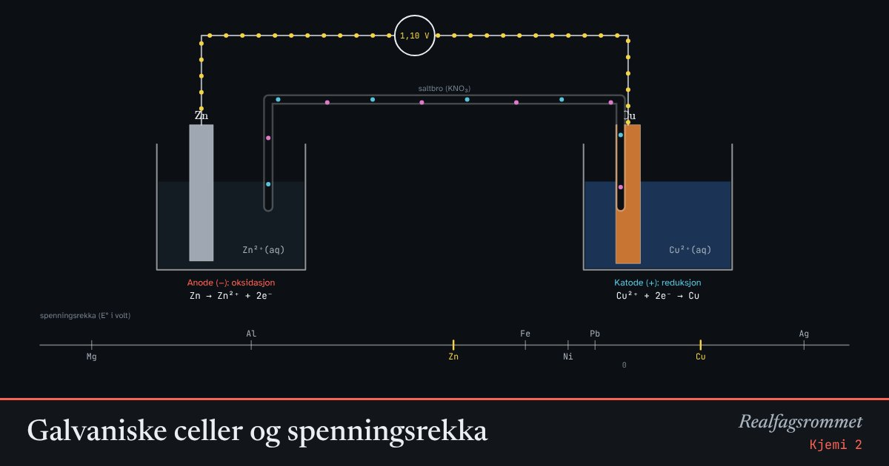

Galvaniske celler og spenningsrekka
Metallet som står lavest i spenningsrekka gir fra seg elektroner (oksideres). Elektronene går gjennom ledningen til det andre metallet, der ioner tar dem opp (reduseres). Spenningen er forskjellen i potensial.
Start animasjonen
Formler
Om animasjonen
Elektronene (gule) går gjennom ledningen fra anoden til katoden. Anoden løses opp, og det felles ut metall på katoden.
Saltbroen lukker kretsen. Negative ioner vandrer mot anoden og positive mot katoden, slik at løsningene forblir nøytrale.
Jo lenger fra hverandre metallene står i spenningsrekka, jo større blir spenningen. Et Daniell-element (sink og kobber) gir 1,10 V.
Spenningsrekka nederst viser standard reduksjonspotensialer målt mot hydrogenelektroden.
Prøv dette
- Regn ut spenningen i en celle med magnesium og sølv.
- Bytt om venstre og høyre elektrode. Hva skjer med elektronstrømmen?
- Hvilket metall er anode når du kobler jern og nikkel? Hvorfor?
- Hvordan kan sink beskytte et stålskip mot korrosjon (offeranode)?
Kompetansemål
- Kjemi 2: Redoksreaksjoner og galvaniske celler